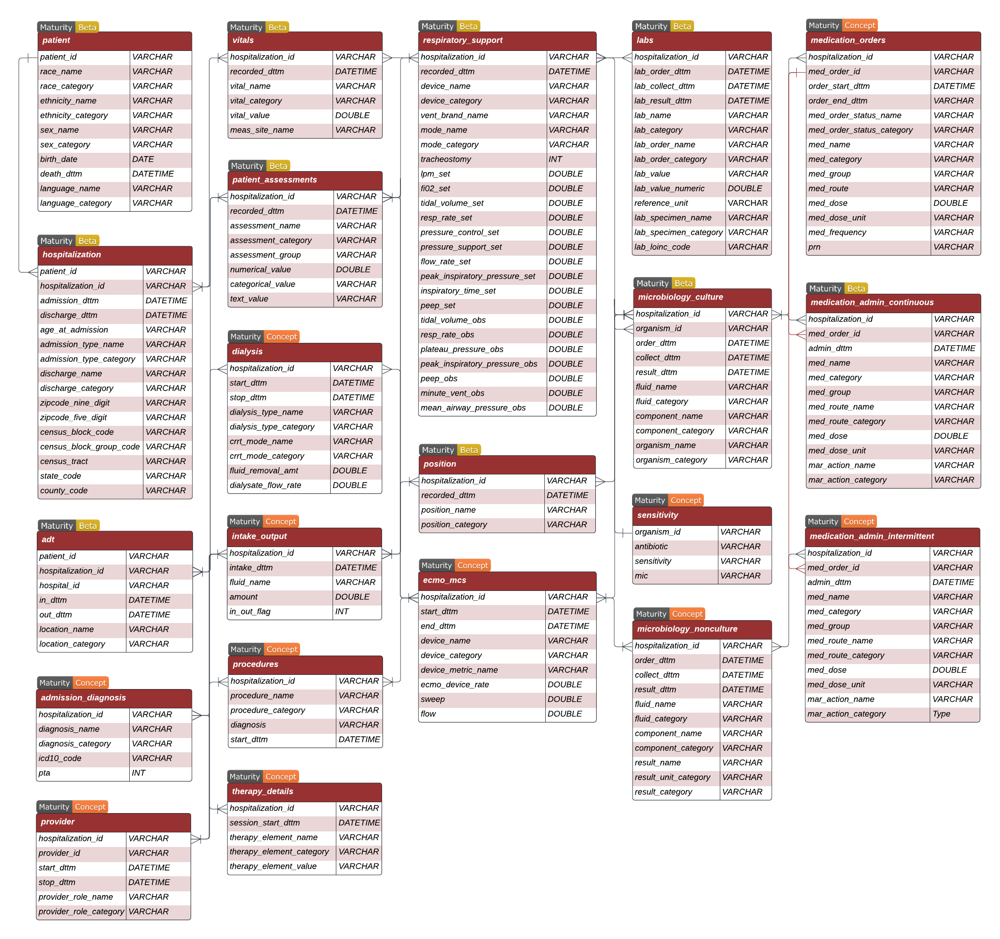

CLIF-2.0 Data Dictionary
Below is the entity-relationship diagram (ERD) that provides an overview of the relational CLIF database structure.

Relational CLIF (RCLIF) is a database that is organized into clinically relevant column categories - demographics, objective measures, respiratory support, orders, and inputs-outputs. Below are sample templates for each table in R-CLIF. Here you can find detailed descriptions of each table and their fields.
You can use our custom GPT- CLIF Assistant to learn more about CLIF and develop analysis scripts.
CLIF maturity
CLIF is still under development and some parts of the format are more mature than others. CLIF will also need to evolve as the set of minimum Common Data Elements for studying critical illness expands or changes over time.
The consortium has two different maturity concepts: one for the overall ER model and one for the individual tables.
Overall Maturity Level for CLIF
 Experimental: Majority of critical illness and hospital course not represented in Entity-Relationship (ER) model, expect frequent breaking changes.
Experimental: Majority of critical illness and hospital course not represented in Entity-Relationship (ER) model, expect frequent breaking changes. Beta: Core ER model complete and breaking changes to the existing structure unlikely. Actively seeking feedback about new tables to add to the ER model to fully capture critical illness.
Beta: Core ER model complete and breaking changes to the existing structure unlikely. Actively seeking feedback about new tables to add to the ER model to fully capture critical illness. Stable: Tested and recommended for general use. EHR data not currently represented in CLIF outside the scope of the format.
Stable: Tested and recommended for general use. EHR data not currently represented in CLIF outside the scope of the format. Mature: Widely adopted across majority of consortium sites with majority of tables in stable or mature (see maturity levels for CLIF Tables). ER model very stable.
Mature: Widely adopted across majority of consortium sites with majority of tables in stable or mature (see maturity levels for CLIF Tables). ER model very stable. Deprecated: No longer maintained.
Deprecated: No longer maintained.
The entity-relationship model for this project is currently at the  Beta level for adult patients in a general medical intensive care unit. Major breaking changes to the existing structure are unlikely. The consortium is actively seeking feedback about new tables and fields to add to the ER model to achieve the goal of representing developing a minimum Common ICU Data Elements (mCIDE)
Beta level for adult patients in a general medical intensive care unit. Major breaking changes to the existing structure are unlikely. The consortium is actively seeking feedback about new tables and fields to add to the ER model to achieve the goal of representing developing a minimum Common ICU Data Elements (mCIDE)
For pediatric patients, CLIF is in the  Experimental maturity phase. CLIF is also
Experimental maturity phase. CLIF is also  Experimental for adult patients in specialty ICUs (e.g. cardiac intensive care unit, surgical intensive care unit, and neurointensive care unit).
Experimental for adult patients in specialty ICUs (e.g. cardiac intensive care unit, surgical intensive care unit, and neurointensive care unit).
Maturity Levels for CLIF Tables
There are two critical maturity elements for each CLIF table: 1) field structure and 2) Common ICU data Element development. Each CLIF table has one or more consortium physician-data scientists who are responsible for table design.
 Concept: Placeholder for future CLIF table. Majority of table structure and CDE elements incomplete. Expect breaking changes.
Concept: Placeholder for future CLIF table. Majority of table structure and CDE elements incomplete. Expect breaking changes.- Beta: Table structure and field names complete, but not fully tested. CDE for category variables underdevelopment. Actively seeking feedback.
- Stable: Tested and recommended for general use. CDE stable with permissible values for all category variables precisely defined and locked. Fully implemented at multiple consortium sites and used in a peer-reviewed publication.
- Mature: Adopted across a majority of the CLIF consortium sites and very stable.
- Deprecated: No longer maintained.
The CLIF-1.0 data dictionary is available here and is now deprecated
General inpatient tables
The data in these tables are typically of most electronic data warehouse systems and are not specific to critical illness. The CLIF versions of these general tables are designed to ensure that they clearly represent the minimum set of data required for critical illness research. Whenever possible, CLIF seeks compatibility with existing EHR data standards.
Patient

This table contains demographic information about the patient that does not vary between hospitalizations. It is inspired by the OMOP Person table
| Variable Name | Data Type | Definition | Permissible Values |
|---|---|---|---|
| patient_id | VARCHAR | Unique identifier for each patient. This is presumed to be a distinct individual. | |
| race_name | VARCHAR | Patient race string from source data | No restriction |
| race_category | VARCHAR | A standardized CDE description of patient’s race per the US Census permissible values. The source data may contain different strings for race. | Black or African American, White, American Indian or Alaska Native, Asian, Native Hawaiian or Other Pacific Islander, Unknown, Other |
| ethnicity_name | VARCHAR | Patient ethnicity string from source data | No restriction |
| ethnicity_category | VARCHAR | Description of patient’s ethnicity per the US census definition. The source data may contain different strings for ethnicity. | Hispanic, Non-Hispanic, Unknown |
| sex_name | VARCHAR | Patient’s biological sex as given in the source data. | No restriction |
| sex_category | VARCHAR | Patient’s biological sex. | Male, Female, Unknown |
| birth_date | DATETIME | Patient’s date of birth. | Date format should be %Y-%m-%d |
| death_dttm | DATETIME | Patient’s death date, including time. | Datetime format should be %Y-%m-%d %H:%M:%S |
| language_name | VARCHAR | Patient’s preferred language. | Original string from the source data |
| language_category | VARCHAR | Maps language_name to a standardized list of spoken languages |
Under-development |
Hospitalization
The hospitalization table contains information about each hospitalization event. Each row in this table represents a unique hospitalization event for a patient. This table is inspired by the visit_occurance OMOP table but is specific to inpatient hospitalizations (including those that begin in the emergency room).

| Variable Name | Data Type | Definition | Permissible Values |
|---|---|---|---|
| patient_id | VARCHAR | Unique identifier for each patient, linking to the patient table |
No restriction |
| hospitalization_id | VARCHAR | Unique identifier for each hospitalization encounter. Each hospitalization_id represents a unique stay in the hospital | No restriction |
| hospitalization_joined_id | VARCHAR | Unique identifier for each continuous inpatient stay in a health system which may span different hospitals (Optional) | No restriction |
| admission_dttm | DATETIME | Date and time the patient is admitted to the hospital | Datetime format should be %Y-%m-%d %H:%M:%S |
| discharge_dttm | DATETIME | Date and time the patient is discharged from the hospital | Datetime format should be %Y-%m-%d %H:%M:%S |
| age_at_admission | INT | Age of the patient at the time of admission, in years | No restriction |
| admission_type_name | VARCHAR | Type of inpatient admission. Original string from the source data | e.g. “Direct admission”, “Transfer”, “Pre-op surgical” |
| admission_type_category | VARCHAR | Admission disposition mapped to mCIDE categories | Under-development |
| discharge_name | VARCHAR | Original discharge disposition name string recorded in the raw data | No restriction, e.g. “home” |
| discharge_category | VARCHAR | Maps discharge_name to a standardized list of discharge categories |
Home, Skilled Nursing Facility (SNF), Expired, Acute Inpatient Rehab Facility, Hospice, Long Term Care Hospital (LTACH), Acute Care Hospital, Group Home, Chemical Dependency, Against Medical Advice (AMA), Assisted Living, Still Admitted, Missing, Other, Psychiatric Hospital, Shelter, Jail |
| zipcode_nine_digit | VARCHAR | Patient’s 9 digit zip code, used to link with other indices such as ADI and SVI | No restriction |
| zipcode_five_digit | VARCHAR | Patient’s 5 digit zip code, used to link with other indices such as ADI and SVI | No restriction |
| census_block_code | VARCHAR | 15 digit FIPS code | No restriction |
| census_block_group_code | VARCHAR | 12 digit FIPS code | No restriction |
| census_tract | VARCHAR | 11 digit FIPS code | No restriction |
| state_code | VARCHAR | 2 digit FIPS code | No restriction |
| county_code | VARCHAR | 5 digit FIPS code | No restriction |
Notes:
If a patient is discharged to Home/Hospice, then
discharge_category == Hospice.The geographical indicators(
zipcode_nine_digit,zipcode_five_digit,census_block_code,census_block_group_code,census_tract,state_code,county_code) should be added if they are available in your source dataset.zipcode_nine_digitis preferred overzipcode_five_digit, andcensus_block_codeis ideal for census based indicators.The choice of geographical indicators may differ depending on the project.If a patient is transferred between different hospitals within a health system, a new
hospitalization_idshould be createdIf a patient is initially seen in an ER in hospital A and then admitted to inpatient status in hospital B, one
hospitalization_idshould be created for data from both staysA
hospitalization_joined_idcan also be created from a CLIF table from contiguoushospitalization_ids
ADT
The admission, discharge, and transfer (ADT) table is a start-stop longitudinal dataset that contains information about each patient’s movement within the hospital. It also has a hospital_id field to distinguish between different hospitals within a health system.

| Variable Name | Data Type | Definition | Permissible Values |
|---|---|---|---|
| hospitalization_id | VARCHAR | ID variable for each patient encounter | No restriction |
| hospital_id | VARCHAR | Assign a unique ID to each hospital within a healthsystem | No restriction |
| in_dttm | DATETIME | Start date and time at a particular location | Datetime format should be %Y-%m-%d %H:%M:%S |
| out_dttm | DATETIME | End date and time at a particular location | Datetime format should be %Y-%m-%d %H:%M:%S |
| location_name | VARCHAR | Location of the patient inside the hospital. This field is used to store the patient location from the source data. This field is not used for analysis. | No restriction |
| location_category | VARCHAR | Maps location_name to a standardized list of ADT location categories |
ed, ward, stepdown, icu, procedural, l&d, hospice, psych, rehab, radiology, dialysis, other |
Note: Procedural areas and operating rooms should be mapped to Procedural. Pre/Intra/Post-procedural/OR EHR data (such as anesthesia flowsheet records from Labs, Vitals, Scores, Respiratory Support) are not currently represented in CLIF.
Vitals
The vitals table is a long-form (one vital sign per row) longitudinal table.

| Variable Name | Data Type | Definition | Permissible Values |
|---|---|---|---|
| hospitalization_id | VARCHAR | ID variable for each patient encounter. | No restriction |
| recorded_dttm | DATETIME | Date and time when the vital is recorded. | Datetime format should be %Y-%m-%d %H:%M:%S |
| vital_name | VARCHAR | This field is used to store the description of the flowsheet measure from the source data. This field is not used for analysis. | No restriction |
| vital_category | VARCHAR | Maps vital_name to a list standard vital sign categories |
temp_c, heart_rate, sbp, dbp, spo2, respiratory_rate, map, height_cm, weight_kg |
| vital_value | DOUBLE | Recorded value of the vital. Ensure that the measurement unit is aligned with the permissible units of measurements. | temp_c = Celsius, height_cm = Centimeters, weight_kg = Kg, map = mm/Hg, spo2 = %. No unit for heart_rate, sbp, dbp, and respiratory_rate |
| meas_site_name | VARCHAR | Site where the vital is recorded. No CDE corresponding to this variable (Optional field) | No restrictions. Note: no _category CDE variable exists yet |
Labs
The labs table is a long form (one lab result per row) longitudinal table. Each lab result

| Variable Name | Data Type | Definition | Permissible Values |
|---|---|---|---|
| hospitalization_id | VARCHAR | ID variable for each patient encounter. | No restriction |
| lab_order_dttm | DATETIME | Date and time when the lab is ordered. | Datetime format should be %Y-%m-%d %H:%M:%S |
| lab_collect_dttm | DATETIME | Date and time when the specimen is collected. | Datetime format should be %Y-%m-%d %H:%M:%S |
| lab_result_dttm | DATETIME | Date and time when the lab results are available. | Datetime format should be %Y-%m-%d %H:%M:%S |
| lab_order_name | VARCHAR | Procedure name for the lab, e.g. “Complete blood count w/ diff” | No restriction |
| lab_order_category | VARCHAR | Maps lab_order_nameto standardized list of common lab order names, e.g. “CBC” |
CDE under development |
| lab_name | VARCHAR | Original lab component as recorded in the raw data, e.g. “AST (SGOT)”. | No restriction |
| lab_category | VARCHAR | Maps lab_name to a minimum set of standardized labs identified by the CLIF consortium as minimum necessary labs for the study of critical illness. |
List of lab categories in CLIF |
| lab_value | VARCHAR | Recorded value corresponding to a lab. Lab values are often strings that can contain non-numeric results (e.g. “> upper limit of detection”). | No restriction |
| lab_value_numeric | DOUBLE | Parse out numeric part of the lab_value variable (optional). | Numeric |
| reference_unit | VARCHAR | Unit of measurement for that lab. | Permissible reference values for each lab_category listed here |
| lab_specimen_name | VARCHAR | Original fluid or tissue name the lab was collected from as given in the source data | No restriction |
| lab_specimen_category | VARCHAR | fluid or tissue the lab was collected from, analogous to the LOINC “system” component. | working CDE c(blood/plasma/serum, urine, csf, other). |
| lab_loinc_code | VARCHAR | LOINC code for the lab | No restrictions |
Note: The lab_value field often has non-numeric entries that are useful to make project-specific decisions. A site may choose to keep the lab_value field as a character and create a new field lab_value_numeric that only parses the character field to extract the numeric part of the string.
Patient Assessments

The patient_assessments table captures various assessments performed on patients across different domains, including neurological status, sedation levels, pain, and withdrawal. The table is designed to provide detailed information about the assessments, such as the name of the assessment, the category, and the recorded values.
| Variable Name | Data Type | Definition | Permissible Values |
|---|---|---|---|
| hospitalization_id | VARCHAR | Primary Identifier. Unique identifier linking assessments to a specific patient hospitalization. | |
| recorded_dttm | DATETIME | The exact date and time when the assessment was recorded, ensuring temporal accuracy. | Datetime format should be %Y-%m-%d %H:%M:%S |
| assessment_name | VARCHAR | Assessment Tool Name. The primary name of the assessment tool used (e.g., GCS, NRS, SAT Screen). | No restriction |
| assessment_category | VARCHAR | Maps assessment_name to a standardized list of patient assessments |
List of permissible assessment categories here |
| assessment_group | VARCHAR | Broader Assessment Group. This groups the assessments into categories such as “Sedation,” “Neurologic,” “Pain,” etc. | List of permissible assessment groups here |
| numerical_value | DOUBLE | Numerical Assessment Result. The numerical result or score from the assessment component. | Applicable for assessments with numerical outcomes (e.g., 0-10, 3-15). |
| categorical_value | VARCHAR | Categorical Assessment Result. The categorical outcome from the assessment component. | Applicable for assessments with categorical outcomes (e.g., Pass/Fail, Yes/No). |
| text_value | VARCHAR | Textual Assessment Result. The textual explanation or notes from the assessment component. | Applicable for assessments requiring textual data. |
Provider

Continuous start stop record of every provider who cared for the patient.
| Variable Name | Data Type | Definition | Permissible Values |
|---|---|---|---|
| hospitalization_id | VARCHAR | Unique identifier for each hospitalization, linking the provider to a specific encounter | No restriction |
| provider_id | VARCHAR | Unique identifier for each provider. This represents individual healthcare providers | No restriction |
| start_dttm | DATETIME | Date and time when the provider’s care or involvement in the patient’s case began | Datetime format should be %Y-%m-%d %H:%M:%S |
| stop_dttm | DATETIME | Date and time when the provider’s care or involvement in the patient’s case ended | Datetime format should be %Y-%m-%d %H:%M:%S |
| provider_role_name | VARCHAR | The original string describing the role or specialty of the provider during the hospitalization | No restriction |
| provider_role_category | VARCHAR | Maps provider_role_name to list of standardized provider roles |
under development |
Admission Diagnosis

Record of all diagnoses associated with the hospitalization. Expect breaking changes to this table as we seek to align it with existing diagnosis ontologies
| Variable Name | Data Type | Definition | Permissible Values |
|---|---|---|---|
| patient_id | VARCHAR | Unique identifier for each patient | No restriction |
| diagnostic_code | DOUBLE | numeric diagnosis code | valid code in the diagnositic_code_format |
| diagnosis_code_format | VARCHAR | description of the diagnostic code format | icd9 ,icd10 |
| start_dttm | DATETIME | date time the diagnosis was recorded | Datetime format should be %Y-%m-%d %H:%M:%S |
| end_dttm | DATETIME | date time the diagnosis was noted as resolved (if resolved) | Datetime format should be %Y-%m-%d %H:%M:%S |
Medication Admin Intermittent

This table has exactly the same schema as medication_admin_continuous described below. The consortium decided to separate the medications that are administered intermittently from the continuously administered medications. However, the CDE for medication_category remains undefined for medication_admin_intermittent.
Medication Orders

This table records the ordering (not administration) of medications. The table is in long form (one medication order per row) longitudinal table. Linkage to the medication_admin_continuous and medication_admin_intermittent tables is through the med_order_id field.
| Variable Name | Data Type | Definition | Permissible Values |
|---|---|---|---|
| hospitalization_id | VARCHAR | Unique identifier for each hospitalization, linking medication orders to a specific encounter | No restrictions |
| med_order_id | VARCHAR | Unique identifier for each medication order | No restrictions |
| order_start_dttm | DATETIME | Date and time when the medication order was initiated | Datetime format should be %Y-%m-%d %H:%M:%S |
| order_end_dttm | DATETIME | Date and time when the medication order ended or was discontinued | Datetime format should be %Y-%m-%d %H:%M:%S |
| ordered_dttm | DATETIME | Date and time when the medication was actually ordered | Datetime format should be %Y-%m-%d %H:%M:%S |
| med_name | VARCHAR | Name of the medication ordered | No restrictions |
| med_category | VARCHAR | Maps med_name to a list of permissible medication names |
Combined CDE of medication_admin_continuous and medication_admin_intermittent , under development |
| med_group | VARCHAR | Limited number of medication groups identified by the CLIF consortium | |
| med_order_status_name | VARCHAR | Status of the medication order, e.g. “held”, or “given” | No restrictions |
| med_order_status_category | VARCHAR | Maps med_order_status_name to a standardized list of medication order statuses |
Under-development |
| med_route_name | VARCHAR | Route of administration for the medication | No restrictions, Examples include Oral, Intravenous |
| med_dose | DOUBLE | Dosage of the medication ordered | Numeric |
| med_dose_unit | VARCHAR | Unit of measurement for the medication dosage | Examples include mg, mL, units |
| med_frequency | VARCHAR | Frequency with which the medication is administered, as per the order | Examples include Once Daily, Every 6 hours |
| prn | BOOLEAN | Indicates whether the medication is to be given “as needed” (PRN) | 0 (No), 1 (Yes) |
Critical illness specific tables
Respiratory Support

The respiratory support table is a wider longitudinal table that captures simultaneously recorded ventilator settings and observed ventilator parameters. The table is designed to capture the most common respiratory support devices and modes used in the ICU. It will be sparse for patients who are not on mechanical ventilation.
| Variable Name | Data Type | Definition | Permissible Values |
|---|---|---|---|
| hospitalization_id | VARCHAR | ID variable for each patient encounter | |
| recorded_dttm | DATETIME | Date and time when the device started | Datetime format should be %Y-%m-%d %H:%M:%S |
| device_name | VARCHAR | Includes raw string of the devices. Not used for analysis | No restriction |
| device_category | VARCHAR | Maps device_name to a standardized list of respiratory support device categories |
IMV, NIPPV, CPAP, High Flow NC, Face Mask, Trach Collar, Nasal Cannula, Room Air, Other |
| vent_brand_name | VARCHAR | Ventilator model name when device_category is IMV or NIPPV |
No restriction |
| mode_name | VARCHAR | Includes raw string of the modes, e.g. “CMV volume control” | No restriction |
| mode_category | VARCHAR | Maps mode_name to a standardized list of modes of mechanical ventilation |
Assist Control-Volume Control, Pressure Control, Pressure-Regulated Volume Control, SIMV, Pressure Support/CPAP, Volume Support, Other |
| tracheostomy | BOOLEAN | Indicates if tracheostomy is present | 0 = No, 1 = Yes |
| fio2_set | DOUBLE | Fraction of inspired oxygen set in decimals (e.g. 0.21) | No restriction, see Expected _set values for each device_category and mode_category |
| lpm_set | DOUBLE | Liters per minute set | No restriction, see Expected _set values for each device_category and mode_category |
| tidal_volume_set | DOUBLE | Tidal volume set (in mL) | No restriction, see Expected _set values for each device_category and mode_category |
| resp_rate_set | DOUBLE | Respiratory rate set (in bpm) | No restriction, see Expected _set values for each device_category and mode_category |
| pressure_control_set | DOUBLE | Pressure control set (in cmH2O) | No restriction, see Expected _set values for each device_category and mode_category |
| pressure_support_set | DOUBLE | Pressure support set (in cmH2O) | No restriction, see Expected _set values for each device_category and mode_category |
| flow_rate_set | DOUBLE | Flow rate set | No restriction, see Expected _set values for each device_category and mode_category |
| peak_inspiratory_pressure_set | DOUBLE | Peak inspiratory pressure set (in cmH2O) | No restriction, see Expected _set values for each device_category and mode_category |
| inspiratory_time_set | DOUBLE | Inspiratory time set (in seconds) | No restriction, see Expected _set values for each device_category and mode_category |
| peep_set | DOUBLE | Positive-end-expiratory pressure set (in cmH2O) | No restriction, see Expected _set values for each device_category and mode_category |
| tidal_volume_obs | DOUBLE | Observed tidal volume (in mL) | No restriction |
| resp_rate_obs | DOUBLE | Observed respiratory rate (in bpm) | No restriction |
| plateau_pressure_obs | DOUBLE | Observed plateau pressure (in cmH2O) | No restriction |
| peak_inspiratory_pressure_obs | DOUBLE | Observed peak inspiratory pressure (in cmH2O) | No restriction |
| peep_obs | DOUBLE | Observed positive-end-expiratory pressure (in cmH2O) | No restriction |
| minute_vent_obs | DOUBLE | Observed minute ventilation (in liters) | No restriction |
| mean_airway_pressure_obs | DOUBLE | Observed mean airway pressure | No restriction |
Expected *_set values for each device_category and mode_category
device_category == “IMV”
| ventilator setting | Assist Control-Volume Control |
Pressure Support/CPAP |
Pressure Control |
Pressure-Regulated Volume Control |
SIMV |
Volume Support |
| fio2_set | E | E | E | E | E | E |
| tidal_volume_set | E | E | P | E | ||
| resp_rate_set | E | E | E | E | ||
| pressure_control_set | E | P | ||||
| pressure_support_set | E | E | ||||
| flow_rate_set | P | P | ||||
| inspiratory_time_set | P | E | P | |||
| peep_set | E | E | E | E | E | E |
E = Expected ventilator setting for the mode, P = possible ventilator setting for the mode.
device_category == “NIPPV”
mode_category is Pressure Support/CPAP and the fio2_set, peep_set , and either pressure_support_set OR peak_inspiratory_pressure_set (IPAP) is required.
device_category == “CPAP”
mode_category is Pressure Support/CPAP and the fio2_set and peep_set are required.
device_category == “High Flow NC”
mode_category is NA and the fio2_set and lpm_set are required.
device_category == “Face Mask”
mode_category is NA lpm_set is required. fio2_set is possible.
device_category == “Trach Collar” or “Nasal Cannula”
mode_category is NA and lpm_set is required.
Medication Admin Continuous

The medication admin continuous table is a long-form (one medication administration per row) longitudinal table. Note that it only reflects dose changes of the continuous medication and does not have a specific “end_time” variable to indicate the medication being stopped.
| Variable Name | Data Type | Definition | Permissible Values |
|---|---|---|---|
| hospitalization_id | VARCHAR | ID variable for each patient encounter | |
| med_order_id | VARCHAR | Medication order ID. Foreign key to link this table to other medication tables | |
| admin_dttm | DATETIME | Date and time when the medicine was administered | Datetime format should be %Y-%m-%d %H:%M:%S |
| med_name | VARCHAR | Original med name string recorded in the raw data which often contains concentration e.g. “NOREPInephrine 8 mg/250 mL” | |
| med_category | VARCHAR | Maps med_name to a limited set of active ingredients for important ICU medications, e.g. “norepinephrine” |
List of continuous medication categories in CLIF |
| med_group | VARCHAR | Limited number of ICU medication groups identified by the CLIF consortium, e.g. “vasoactives” | List of continuous medication groups in CLIF |
| med_route_name | VARCHAR | Medicine delivery route | e.g. IV, enteral |
| med_route_category | VARCHAR | Maps med_route_name to a standardized list of medication delivery routes |
Under-development |
| med_dose | DOUBLE | Quantity taken in dose | |
| med_dose_unit | VARCHAR | Unit of dose | |
| mar_action_name | VARCHAR | MAR (medication administration record) action, e.g. “stopped” | |
| mar_action_category | VARCHAR | Maps mar_action_name to a standardized list of MAR actions |
Under-development |
Position

The position table is a long form (one position per row) longitudinal table that captures all documented position changes of the patient. The table is designed for the explicit purpose of constructing the position_category CDE and identifying patients in prone position.
| Variable Name | Data Type | Definition | Permissible Values |
|---|---|---|---|
| hospitalization_id | VARCHAR | ID variable for each patient encounter. This table only includes those encounters that have proning documented ever. | |
| recorded_dttm | DATETIME | Date and time when the vital is recorded. | Datetime format should be %Y-%m-%d %H:%M:%S |
| position_name | VARCHAR | This field is used to store the description of the position from the source data. This field is not used for analysis. | No restriction |
| position_category | VARCHAR | Maps position_name to either prone or not prone. |
prone, not_prone |
Dialysis

The dialysis table is a wider longitudinal table that captures the start and stop times of dialysis sessions, the type of dialysis performed, and the amount of dialysate flow and ultrafiltration.
| Variable Name | Data Type | Definition | Permissible values |
|---|---|---|---|
| hospitalization_id | VARCHAR | ID variable for each patient encounter | |
| start_dttm | DATETIME | Start date and time of dialysis session | Datetime format %Y-%m-%d %H:%M:%S |
| stop_dttm | DATETIME | Stop date and time of dialysis session | Datetime format %Y-%m-%d %H:%M:%S |
| dialysis_type_name | VARCHAR | Name of dialysis type | No restriction |
| dialysis_type_category | VARCHAR | Maps dialysis_type_name to a list of standardized dialysis types |
intermittent, peritoneal, crrt |
| crrt_mode_name | VARCHAR | Name of the CRRT mode, e.g. “CVVHD” | No restriction |
| crrt_mode_category | VARCHAR | Maps crrt_mode_name to a standardized list of CRRT modes |
under development |
| fluid_removal_amt | DOUBLE | Amount of fluid removed during dialysis | Numeric |
| dialysate_flow_rate | DOUBLE | Rate of dialysate flow | Numeric |
ECMO_MCS

The ECMO/MCS table is a wider longitudinal table that captures the start and stop times of ECMO/MCS support, the type of device used, and the work rate of the device.
| Variable Name | Description |
|---|---|
| hospitalization_id | Unique identifier for the hospitalization event. |
| start_dttm | Date and time when ECMO/MCS support started. |
| end_dttm | Date and time when ECMO/MCS support ended. |
| device_name | Name of the ECMO/MCS device used including brand information, e.g. “Centrimag” |
| device_category | Maps device_name to a standardized list of ECMO or MCS |
| device_metric_name | String that captures the measure of work rate of the device, e.g., RPMs. |
| device_rate | Numeric value of work rate, e.g., 3000 RPMs. |
| flow | Blood flow in L/min. |
| sweep | Gas flow rate in L/min. |
Intake_Output

The intake_output table is long form table that captures the times intake and output events were recorded, the type of fluid administered or recorded as “out”, and the amount of fluid.
| Variable Name | Description |
|---|---|
| hospitalization_id | Unique identifier for the hospitalization event. |
| intake_dttm | Date and time of intake. |
| fluid_name | Name of the fluid administered. |
| amount | Amount of fluid administered (in mL). |
| in_out_flag | Indicator for intake or output (1 for intake, 0 for output). |
Therapy_Details

The therapy_details table is a wide longitudinal table that captures the details of therapy sessions. The table is designed to capture and categorize the most common therapy elements used in the ICU.
| Variable Name | Description |
|---|---|
| hospitalization_id | Unique identifier for the hospitalization event. |
| session_start_dttm | Date and time when the therapy session started. |
| therapy_element_name | Name of the therapy element. |
| therapy_element_category | Category of the therapy element. |
| therapy_element_value | Value associated with the therapy element. |
Microbiology Culture

The microbiology culture table is a wide longitudinal table that captures the order and result times of microbiology culture tests, the type of fluid collected, the component of the test, and the organism identified.
| Variable Name | Data Type | Definition | Permissible Values |
|---|---|---|---|
| hospitalization_id | VARCHAR | ID variable for each patient encounter. | |
| order_dttm | DATETIME | Date and time when the test is ordered. | Datetime format should be %Y-%m-%d %H:%M:%S |
| collect_dttm | DATETIME | Date and time when the specimen is collected. | Datetime format should be %Y-%m-%d %H:%M:%S |
| result_dttm | DATETIME | Date and time when the results are available. | Datetime format should be %Y-%m-%d %H:%M:%S |
| fluid_name | VARCHAR | Cleaned fluid name string from the raw data. This field is not used for analysis. | No restriction. Check this file for examples |
| fluid_category | VARCHAR | Fluid categories defined according to the NIH common data elements. | CDE NIH Infection Site |
| component_name | VARCHAR | Original component names from the source data. | No restriction |
| component_category | VARCHAR | Maps component_name to a standardized list of component categories |
culture, gram stain, smear |
| organism_name | VARCHAR | Cleaned organism name string from the raw data. This field is not used for analysis. | No restriction. Check this file for examples](https://github.com/clif-consortium/CLIF/blob/main/mCIDE/mCIDE_mapping_examples/clif_vocab_microbiology_name_organism_ucmc.csv) |
| organism_category | VARCHAR | Maps organism_name to the standardized list of organisms in the NIH CDE |
CDE NIH Organism |
Sensitivity

This table is used to store the susceptibility results of the organisms identified in the Microbiology Culture table and may be renamed to Microbiology_Susceptibility
| Variable Name | Data Type | Definition | Permissible Values |
|---|---|---|---|
| culture_id | VARCHAR | Unique identifier linking to the culture from which the sensitivity test was performed | |
| antibiotic | VARCHAR | Name of the antibiotic tested for sensitivity | Examples include Penicillin, Vancomycin |
| sensitivity | VARCHAR | The result of the sensitivity test, indicating the organism’s resistance or susceptibility | Resistant, Intermediate, Susceptible |
| mic | DOUBLE | Minimum Inhibitory Concentration (MIC) value, which measures the lowest concentration of an antibiotic needed to inhibit growth |
Microbiology_Nonculture

The microbiology non-culture table is a wide longitudinal table that captures the order and result times of non-culture microbiology tests, the type of fluid collected, the component of the test, and the result of the test.
| Variable Name | Description |
|---|---|
| hospitalization_id | Unique identifier for the hospitalization event. |
| result_dttm | Date and time when the non-culture result was obtained. |
| collect_dttm | Date and time when the sample was collected. |
| order_dttm | Date and time when the test was ordered. |
| fluid_name | Name of the fluid sample. |
| component_category | Category of the component tested. |
| result_unit_category | Unit category of the test result. |
| result_category | Category of the test result. |
Procedures

A longitudinal record of each bedside ICU procedure performed on the patient (e.g. central line placement, chest tube placement). Note that this table is not intended to capture the full set of procedures performed on inpatients.
| Variable Name | Data Type | Definition | Permissible Values |
|---|---|---|---|
| hospitalization_id | VARCHAR | Unique identifier for each hospitalization, linking the procedure to a specific encounter | |
| procedure_name | VARCHAR | Name of the procedure performed on the patient | Examples include “Central Line Placement” |
| procedure_category | VARCHAR | Maps procedure_name to a list of standardized procedures |
CDE under development |
| diagnosis | VARCHAR | The diagnosis or reason for performing the procedure | |
| start_dttm | DATETIME | Date and time when the procedure was initiated |
Future proposed tables
These are tables without any defined structure that the consortium has not yet committed to implementing.
Code_status: longitudinal record containing changes in the patient’s code status during the hospitalization over time
hospitalization_id
start_dttm
code_status_name
code_status_categorywith levelsc(DNR, UDNR, DNR/DNI, Full, Presume Full, Other)Clinical Decision Support: This table will capture the actions of clinical decision support tools embedded in the EHR. The table will have the following fields:
cds_name,cds_category,cds_value,cds_trigger_ddtm.